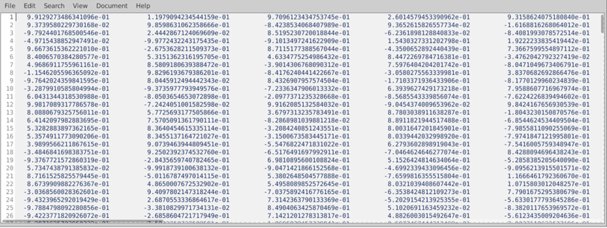

Creating physiology regressors using the PhysIO toolbox
October 2023; additional info and further read: https://www.sciencedirect.com/science/article/pii/S016502701630259X?via%3Dihub
Acquistion of log-files:
Physiology logging:
- Press tab + [-> + Entf to enter admin mode
- PMU control
- control-esc
- run -> cmd
- in the terminal, type ideacmdtool
- DON’T use startLogAll, start puls and ECG separately (if both are started simultaneously, recording will terminate after 5 min.)
- After a while there should be a message with “ok” at the end
- Data is stored in
C:\ProgramFiles\Siemens\Numaris\ Mars\log\(there is a shortcut “log” in the Explorer ) - Stop recording after experiment with stopLogAll, move data to
C:\_Natalia\STUDYNAME
Required:
- Json- files of functional data for each run
- Physiology log-files, one for all runs (.resp and .puls files)
Figure 1. Puls and resp-file.
- Script:
/storage/nv_shared/PhysIO_excitex/PhysIO_get_regressors.m
Before running the script:
Always check if on path: SPM:
/usr/local/spm12/Toolbox-code modified for our scanner model:/storage/nv_shared/software/PhysIO/tapas-master/PhysIO/codeIndividual parameter settings in the script:
physio.log_files.vendor= ‘Siemens_xa20’; % specific for our scanner model.physio.log_files.resp_type= ‘spine’; % set to spine or belt, depending on type of physiology correction.physio.model.orthogonalise= ‘RETROICOR’; % select depending on physiology model used, e.g. ‘RETROICOR’, or c, r; to avoid correlations between regressors.physio.model.retroicor.include= true; % select physiology model here: RETROICOR, RVT or HVT.physio.model.retroicor.order.c= 3;physio.model.retroicor.order.r= 4;physio.model.retroicor.order.cr= 1; % select orders for RETROICOR model; here the default option based on Glover et al., 2000 is set.physio.model.rvt.include= false; % select physiology model here.physio.model.hrv.include= false; % select physiology model here.physio.model.other.include= false; % select physiology model here.physio.verbose.level= 3; % 2 or 3, will produce control plots – useful to check quality of data and if synchronization has worked; when analyzing several participants it’s best to set to 0.
After running the script:
- Validation of results - Check the diagnostic plots the toolbox delivers:
- Check the raw time series for artifacts/ detachments (4A)
- Check distribution of raw physiological data (should be left-skewed, 4B), are there any indications for ceiling effects or temporary detachment (2)?
- Check period used for synchronization, does it fit? (4C)
- Check filtered time series (are there still severe artifacts?)
- Check regressor file (3): regressors should have a value for each slice and 18 regressors if you specified RETROICOR (i.e., 6 cardiac phase regressors, 8 respiratory phase regressors, and 4 interaction terms).
- Regressors can then be added to a GLM.
Figure 2. Artifacts in raw respiratory signal due to issues during recording with the breathing belt.
Figure 3. Final output (RETROICOR regressors)

Figure 4. Steps from raw data to the final regressors.